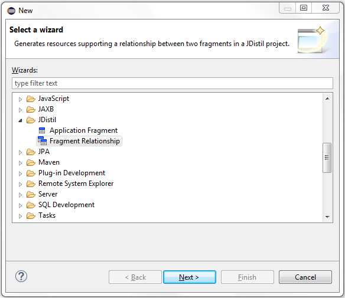
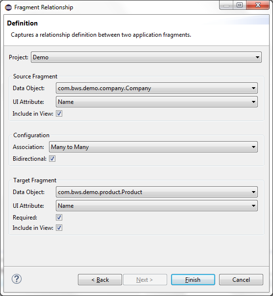
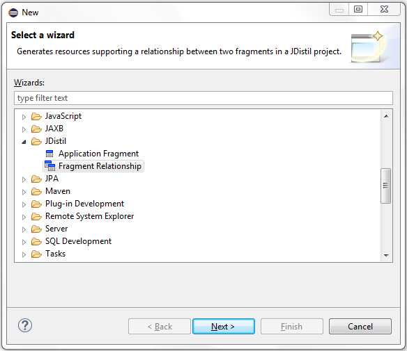
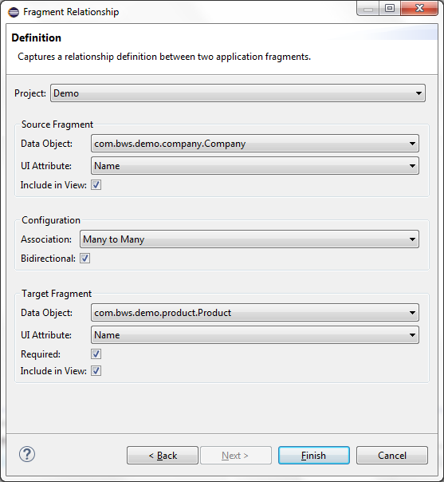

Fragment Relationship
The Fragment Relationship wizard is used to establish a many-to-many or many-to-one relationship between two application
fragments. Many-to-many relationships support the option of managing the relationship from both entity user interfaces.
Relationship Creation
Select the new resource wizard and choose the Fragment Relationship wizard.

Populate all required fields on the Definition wizard page. Definitions of each field are listed below the screen shot.


Populate all required fields on the Definition wizard page. Definitions of each field are listed below the screen shot.

| Field | Description |
|---|---|
| Project | Workspace project where application resources will be generated. |
| Source Fragment: Data Object | Data object associated with the source fragment. |
| Source Fragment: UI Attribute | Attribute associated with the source fragment data object. Only valid in a many-to-many relationship and specifies the value to display when managing the relationship from the target fragment user interface. |
| Source Fragment: Include in View | Indicates the source fragment will be included in the target fragment's view. |
| Configuration: Association | Type of relationship to establish. Many-to-many or many-to-one relationships are available for selection. |
| Configuration: Bidirectional | Indicates the relationship can be managed from both the source and target fragment user interfaces. |
| Target Fragment: Data Object | Data object associated with the target fragment. |
| Target Fragment: UI Attribute | Attribute associated with the target fragment data object. Specifies the value to display when managing the relationship from the target fragment user interface. |
| Target Fragment: Required | Indicates the target fragment is a required field when editing a source fragment. |
| Target Fragment: Include in View | Indicates the target fragment will be included in the source fragment's view. |
Relationship Resources
The following table documents the project specific resources modified by the Fragment Relationship wizard.
| Directory | Resource | Description |
|---|---|---|
| src | <base-package>.configuration.FieldIds | Adds relationship specific field ID constants. |
| src | <base-package>.configuration.fragment.<fragment-name>Configuration | Add fields, actions, and data object bindings supporting the fragment relationship. |
| src | <base-package>.<fragment-name>.<fragment-name>.java | Adds property supporting the fragment relationship. |
| src | <base-package>.<fragment-name>.<fragment-name>Manager.java | Adds a column binding (many-to-one) or associate binding (many-to-many) the fragment relationship. |
| sql | app-category.txt | Adds fragment specific SQL statements supporting any new code lookup categories. |
| sql | app-entity.txt | Adds SQL statements used to create a column (many-to-one) or associative table (many-to-many) supporting the fragment relationship. |
| sql | app-security.txt | Adds SQL statements used to populate security entitlements supporting the fragment relationship. |
| WebContent/<fragment-name> | <fragment-name>.jsp/td> | Adds selection component to the edit entity page supporting the fragment relationship. |